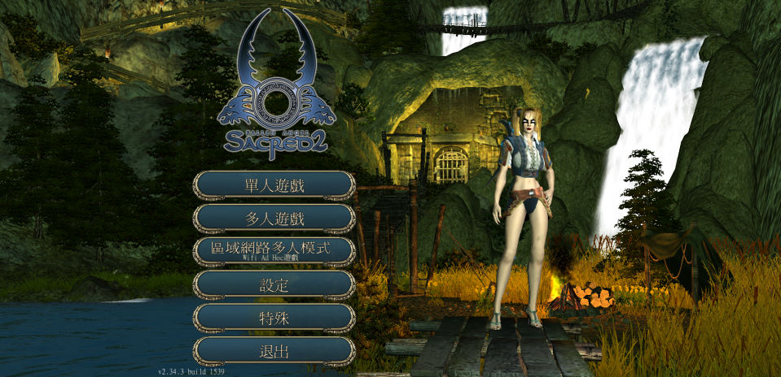
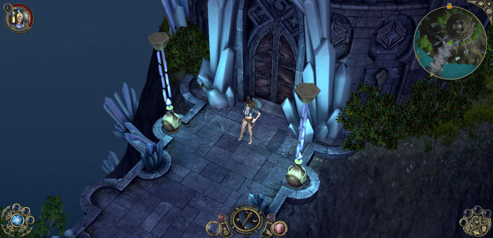

名稱：聖域破壞神2／聖域2／神聖紀事2：墮落天使 (Sacred 2: Fallen Angel，中文版)
簡介：Ascaron 2008年出品的角色扮演遊戲，2009年由新世代多媒體中文化並代理發行，以
斜角3D畫面呈現，採單人即時方式戰鬥。同年雖有推出「冰與血」（Ice & Blood）」
資料片，但僅限歐洲，其後因破產而未再全球化此一資料片 [待補]。


備註：本版為2.34.3版
保護：SecuROM 7.39線上序號認證，可使用SRLoader啟動（啟動過後即可直接執行）。
備註：第三片光碟S2Elite為高畫質材質光碟，確認顯示卡夠力才安裝，一般並不需要安裝。
備註：非安裝移機者，需設定下列Registry，否則無法顯示文字：
[HKEY_LOCAL_MACHINE\SOFTWARE\WOW6432Node\Ascaron Entertainment\Sacred 2]
[HKEY_LOCAL_MACHINE\SOFTWARE\Ascaron Entertainment\Sacred 2]
"Speech"="zh_CHT"
"Language"="zh_CHT"
"MovieTrack"="6"
備註：VirtualBox無法正常執行，虛擬機請使用VMware。
備註：遊戲需要安裝PhysX（本版為7.11.13，較舊版本可能會無法執行，光碟上無安裝檔）。